01Overview
Bryo turns the M-VAVE FM-1 into a four-track instrument for sculpting sound. Each track starts with a source: a tape loop, a synth, a sampler or a drum machine. The sound then goes through four effects, always in this order: GRAIN, RIPPLE, COLOR, CHRONOS. Each track also has four modulators that can move any knob, and an arpeggiator that plays the keys you hold. Four scenes per project let you jump or morph between whole sounds.
There are no menus. You hold a pad and turn a knob. I made it this way because a menu is where an idea goes to wait. If the four knobs always change the four values on the screen, your hands never have to stop and go looking for something.
Phases 1 to 9 of 10 are built, and it has run on a real FM-1 since 2026-10-10. Testing on the hardware is under way. bryo-status.md has the details.
02What's new
Bryo moves quickly. If you used it before, start here.
2026-10-15: shaping, freezing, bouncing
- ENV is where a sound gets shaped. The envelopes, the filter and DRUM's kit moved off HOME and live only under ENV now. HOME keeps the source itself. Pages
- SYNTH and POLY have a second envelope. ENV 2 can open the filter, bite the drive or zap the pitch (SYNTH), and ETYP makes both envelopes ADSR, AD (a strike) or LOOP (a pulse while you hold). SYNTH also has SUB, PW and a second oscillator interval, INTV. Sources
- Filters sing. Past RES 93, SYNTH's and POLY's filters ring on their own at the cutoff.
- TRAN adds a 3 ms click to the start of every note or hit, on SYNTH, POLY and DRUM.
- TAPE's tools: FRZE loops a sliver of the tape, WOW and FLUT warble its speed, and PTCH transposes it in semitones.
- POLY's LOOP holds a note as long as you like, forwards or back and forth.
- DRUM patterns can be a single bar now.
- Bounce: hold REC and press PLAY, and the track records itself straight to a loop on its tape. Recording
- RIPPLE got louder forms, a second page that changes with the form, POL on the comb, FOCS, WDTH and FLOW on the resonators, and a fifth page with the form as a knob. Effects
- CHRONOS is regrouped: the delay's pages first, then the room's.
- GRAIN's BODY gives every grain a partial of its own, so a cloud of grains plays a chord.
- The arpeggiator can fade out (FADE), vary its note lengths (GRND), lights its notes on the keys, and a lit key takes its note out. Arpeggiators
- FOLLOW levels itself, so a quiet sound moves knobs as far as a loud one, and it shows what it hears live on its page.
- The factory project is one groove with three scenes to morph through: AMBIENT, TECHNO and GLITCH. First sounds
2026-10-13: new names, new sounds, scenes
- RESONATOR became RIPPLE, with four forms, and SPACE became CHRONOS. RES ARP became RIPL ARP.
- SYNTH gained the FM, PD, VOX and WT waves, and CHRD. POLY gained TWIN.
- Each project gained four scenes.
- KEY has 15 scales, each modulator moves up to twelve knobs, and the shared tape memory is about 20 seconds.
03Install
There's no Bryo release yet, so for now you build it yourself. Bryo keeps Felucca's update loader exactly as it was. That means installing Bryo works the same way as installing Felucca, and you can always put the FM-1 back the way it was.
1. Build the package
The build needs JieLi's toolchain, which runs on Linux x86-64 (on a Mac it runs in a linux/amd64 container), and three files from the AC79 SDK. BUILDING.md walks through the setup. Once that's done:
git clone https://github.com/thoughtgrain/moss-and-air.git
cd moss-and-air/bryo
tools/get_toolchain.sh # installs to ~/.jieli/toolchain
./build.sh # makes build/bryo.fwsc2. Install from the command line
The installer talks to the FM-1 over MIDI, so it needs two Python packages.
pip3 install mido python-rtmidi
python3 tools/fm1_install.py --info # check which FM-1 is connected
python3 tools/fm1_install.py build/bryo.fwscOr use the web installer
Browsers only allow Web MIDI on a secure page, so serve a copy of the installer from localhost and open it in Chrome or Edge:
python3 web/make_site.py build/bryo.fwsc dev /tmp/bryo-site
cd /tmp/bryo-site && python3 -m http.server 8000
# open http://localhost:8000/webapp/installer/Installing firmware is at your own risk. If an install fails and the FM-1 won't start, FM-1-transporter can recover it. To go back to the stock firmware, use M-VAVE's updater. Bryo's projects and tapes won't open there.
04The panel

- Top left: MASTER (volume), SELECT (tempo), PRESETS (projects and presets), ALGORITHM (what REC records). Under them, OCT− and OCT+.
- Top right: KNOB 1 to 4. They always change the four values on the screen.
- Blue pads, the pages: HOME (the track's source), EDIT (GRAIN, RIPPLE), FX (COLOR, CHRONOS), GLO (the mixer and scenes).
- Purple pads, what moves: LFO holds modulators M1 to M3, SEQ is M4 (a step sequencer), ENV shapes the source (its envelopes, filter or kit), and ARP is the arpeggiator.
- Green pads, the transport: PLAY and REC. SAVE saves, and holding it undoes. Holding SCL resets things.
- Keys: the 16 white keys play the track. The 11 black keys above them mute tracks, flip the tape, clear things and freeze GRAIN.
05Reading the screen
Along the top you'll see the track (T1 to T4), the page's name with a dot for each of its pages, then the transport (■ stopped, ▶ playing, ● recording) and the tempo. On pages that belong to the whole project (SCENES, MASTER, KEY) the box shows the project, like P1, instead of a track. A ✱ means you have changes you haven't saved yet.
Below that are the four knobs. Each one is a little picture, a four-letter name and a value. The picture shows the value too: a dial points, a fader fills. The knob you turned last has its name inverted, so you can find your place.
The screen is white on black, and colour only tells you two things: where you are, and what's making sound. A shape or a word always says the same thing, so you never need to tell the colours apart.
| Colour | Means |
|---|---|
| Blue | A page of the blue pads (HOME, EDIT, FX, GLO) |
| Purple | A modulator's or the arpeggiator's page, or a knob a modulator moves |
| Orange | Sound happening now: grains, strings, echoes, the playhead, the note playing |
| Red | Recording, or the CPU close to its limit |
| Yellow | Something to know: not saved, FROZEN, grains HELD |
06First sounds
- Turn it on. BRYO shows for a moment, then you're on track 1's TAPE page. Don't hold OCT− and OCT+ while it starts, or you'll land in calibration.
- Press PLAY. You'll hear the factory project's first scene, AMBIENT: a choir of minor-seventh chords, a drone through long grains and resonators, and bells that swell in and fade into a big room. Everything is slow. The drums are there but silent in this scene.
- Morph it. Tap GLO, tap EDIT for SCENES, and turn KNOB 2 toward TECHNO: the drums come up and everything ducks on the kick. Turn KNOB 3 on into GLITCH: crushed, stuttering drums and random bells. Tap white keys 1 to 3 to jump between them instead.
- Turn SELECT for the tempo (40 to 240 BPM) and MASTER for the volume. Both work on every page.
- Press the black keys OP1 to OP4 to mute and unmute tracks 1 to 4.
- Hold GLO and press white key 2 to move to track 2. Almost everything you do changes the track you're on.
07Pages and modulation
Every pad opens a page. Press the same pad again and you get its next page, and after the last one it goes back to the first. To jump straight to a page, hold its pad and press a white key. While you hold the pad, one key lights up for each page.
| Pad | Pages, in order |
|---|---|
| HOME | The source itself (TAPE 4 pages, SYNTH 4, POLY 4, DRUM 3). Hold it and turn SELECT to change the source. |
| ENV | What shapes the source: SYNTH's and POLY's AMP, FILTER, ENV 2 and SHAPE; TAPE's slice envelope; DRUM's KIT and KIT 2 |
| EDIT | GRAIN 1 to 6, then RIPPLE 1 to 5 (1 to 6 on RESO and 12-BAND). Hold it and turn SELECT to change RIPPLE's form. |
| FX | COLOR 1 to 3, then CHRONOS 1 to 5 (the delay's, then the room's) |
| LFO, SEQ | A modulator's pages (LFO: M1, M2 or M3; SEQ: M4) |
| ARP | The arpeggiator's 2 pages, then RIPL ARP |
| GLO | The mixer. EDIT then steps through SCENES, CHANNEL, MASTER, KEY and SETUP. |
Make a knob move
Hold LFO or SEQ and turn any knob on a source, effect or channel page. How far you turn sets how far that modulator moves the knob, from −100 to 100 %. The knob gets a purple mark so you can see it's moving.
Each modulator can move up to twelve knobs. While you hold its pad, the bottom of the screen counts them (DEPTH 1/12). If you reach twelve, turn one back to 0, or hold the pad and MONO to clear that modulator's knobs on the page.
The LFO pad holds three modulators. Hold LFO and press OP1, OP2 or OP3 to pick which one it shows. Hold LFO and turn SELECT to change what it is: an LFO, an ADSR envelope or an envelope follower. The knobs it moves stay the same. SEQ is always the step sequencer.
FOLLOW levels itself. It measures each track against that track's own recent peaks, so a quiet pad pushes its knobs as far as a loud drum does. GAIN makes it reach the top sooner or later. On SYNTH, POLY and DRUM its page shows the last second and a half live (LIVE in the corner), even before it moves anything, so you can set RISE, FALL and GAIN by watching it.

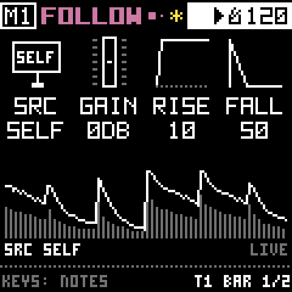
08Sources
Each track starts with one of four sources. Hold HOME and turn SELECT to switch. Each one keeps its own knobs, so switching back loses nothing. HOME's pages are the source itself; ENV's pages shape it.
TAPE
A loop in memory. The white keys play its sixteen slices.
- Page 1: STRT, LEN, SPD and PTCH. PTCH moves the speed in semitones (−24 to +24), so with SPD at 100 % you can play it like a transpose.
- Page 2: DUB, GAIN, XFAD and REV.
- Page 3, the tools: FRZE on holds the moment: the head keeps looping the FLEN milliseconds it was in (10 ms to 1 s), framed in orange, and the keys slice that sliver. A short FLEN buzzes or stutters; a long one repeats a phrase. WOW and FLUT waver the speed slowly and quickly, like a worn cassette.
- Page 4: REEL, ROTA, SYNC (lock the loop to 1 to 16 bars) and LVL. Half speed is on the black OP6 key.
- ENV: an envelope for the slices you play.


SYNTH
Up to three voices, nine waves, two envelopes and a filter.
| Pad, page | Knobs |
|---|---|
| HOME 1 | WAVE, INTV (the second oscillator's interval: +7 a fifth, −12 a sub), DTUN, MIX |
| HOME 2, VOICE | VOIC (1 to 3 notes), GLID, TUNE, FINE |
| HOME 3, MORE | PW (pulse width, for PWM), NOIS, SUB (a square an octave down), DRV |
| HOME 4, LEVEL | CHRD, TRAN, LVL |
| ENV 1, AMP | ATK, DEC, SUS, REL |
| ENV 2, FILTER | CUT, RES, TYPE (LP, BP, HP), KTRK |
| ENV 3, ENV 2 | A second envelope: ATK2, DEC2, SUS2, REL2 |
| ENV 4, SHAPE | ETYP, the wave's own envelope depth, DEST (where ENV 2 goes), ENV (how far) |
Two envelopes. AMP sets the level. ENV 2 goes where DEST says: CUT opens (or closes) the filter, DRV brings the drive up so a note bites at the strike, and PTCH bends the pitch up to two octaves for zaps, kicks and sweeps. ETYP sets both envelopes to ADSR, AD (a strike that dies away whatever the key does) or LOOP (round and round while you hold the key: a pulse, a swell, or a buzzing tremolo).
A filter that sings. Past RES 93 the filter rings on its own at the cutoff, a pure tone that follows CUT. Turn MIX and NOIS down and play it as a sine, or sweep CUT for a whistle.
TRAN puts 3 ms of bright noise in front of the filter at the start of every note: a click with the filter open, a thump with it low. It gives a soft sound an edge.
The waves. Turn WAVE past the classic shapes (SIN, TRI, SQR, SAW, PLS) and the first page relabels:
| Wave | What it is | Knobs |
|---|---|---|
| FM | Two sine waves, one bending the other. From a pure tone to bells, electric pianos and growls. | RATI, INDX; FDBK on MORE |
| PD | Phase distortion, the way Casio's CZ synths worked. Sounds like a filter sweep without a filter. | SHAP, AMT |
| VOX | A buzz through three formants, so it speaks vowels. | VOWL, SHFT; BRTH on MORE |
| WT | A wavetable of eight cycles. POS moves through them. The table can be built in, or cut from any reel, even your own tape. | TABL, POS |
Each of these waves has its own envelope depth (IENV, AENV, VENV, PENV) on the SHAPE page, riding ENV 2. CHRD plays a chord from one key: MAJ, MIN, SUS2, SUS4, DOM7, MAJ7, MIN7, DIM, AUG, 5TH or OCT. The lowest key you hold is the root.

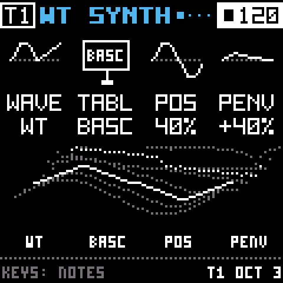
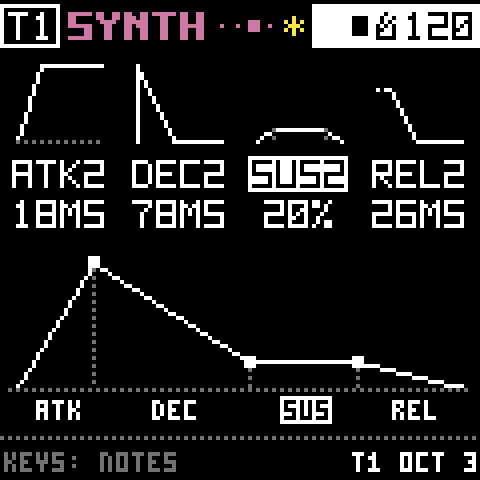
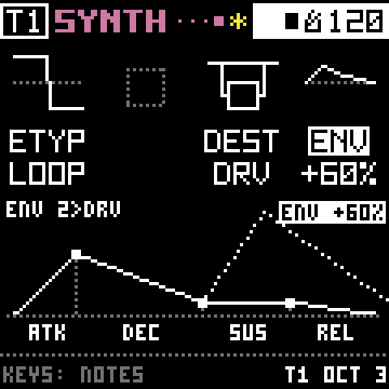
POLY
POLY plays a reel, or the track's own tape, across the keys, up to four notes at once. HOME has REEL, STRT, END and TUNE, then LOOP, TWIN and LEVEL. ENV has its envelope, filter (which self-resonates too), ENV 2 for the filter, and ETYP.
- LOOP: without it a note plays from STRT to END and stops. With it on, a held note loops between LSTR and END, through its release. FWD jumps back with a short crossfade (LXF); PING goes forwards and back, seamless, good for pads and drones from short sounds.
- TWIN adds a second reel (RLB): MIX both in every note, XFD low notes A and high notes B, ALT taking turns, or RND by chance. TUNB tunes B against A.
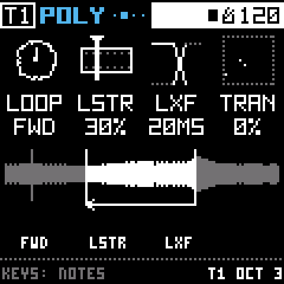

DRUM
Sixteen synthesized drums on the white keys, inspired by the CR-78. HOME has PATTERN (ten rhythms, 1 to 4 bars), VARY (turn SEED away from 0 and it plays its own version, with ghost notes and fills) and STEP, for writing your own. ENV has KIT, the whole kit's TUNE, DEC, TONE and DRV, and KIT 2 with TRAN, a click on top of every hit.
Manual 5 >09Effects
Every track goes through GRAIN, RIPPLE, COLOR and CHRONOS, in that order. They all start off. Each effect's first page ends with its mix, so press EDIT or FX and turn KNOB 4 to bring one in.
GRAIN
Keeps the last few bars of the track and plays them back as small overlapping grains: stretched, held on one spot, or trailing behind with SCAN. Hold the black 0 key to freeze it, or tap to latch. SCAL can be set to KEY, so the grains follow the project's scale.
BODY (GRAIN 5) puts a floor under the grains. On TRI or SIN, each grain gets a partial of its own at its own note, swelling and fading with it. With many grains the body plays a chord of what they play; with a few, each grain thuds on its note.
RIPPLE
The track rings through something tuned. Press EDIT seven times to reach it, then hold EDIT and turn SELECT to choose its form (or turn MODE on page 5):
- RIPPLE: four plucked strings, like a sitar's sympathetic strings.
- COMB: the same lines at half length. Only the odd harmonics ring, for a hollow, clarinet-like body.
- RESO: four resonant bands on the chord's notes.
- 12-BAND: twelve bands climbing through the octaves, a filter bank that sorts whatever comes in into the chord.
Each form now comes out about as loud as what goes in, so turning WET up is a real change. Its pages:
- RIPPLE 1: DEC (how long it rings; FDBK on COMB, RING on the resonators), TONE (TILT on the resonators), ROUT and WET.
- RIPPLE 2 changes with the form. Strings: SPRD, RIPL, DRV, PICK. COMB: POL (ODD for hollow, ALL for every harmonic, an octave up and more metallic), SPRD, RIPL, DRV. RESO and 12-BAND: FOCS and WDTH, a spotlight on the bands; FLOW, which moves that spotlight by itself so the sound walks up through the spectrum and back; and SPRD, which stretches the partials out of tune like a bell.
- RIPPLE 3, the pitch: PTCH (the root), SCAL (the chord: HARM, MAJ, MIN, PEN, SUS2, SUS4, DOM7, MAJ7, MIN7, DIM, AUG, 5TH, OCT), then KEYS and PLVL (how loud a pluck is).
- RIPPLE 4: a filter in front (CUT, RES, TYPE), plus STRM on the strings, PICK on the comb.
- RIPPLE 5: MODE (the form as a knob) and VARY. On COMB, FLOW here sweeps the filter in front for a wah on the comb. RESO and 12-BAND keep their keys (KEYS, PLVL, PICK, STRM) on page 5 and VARY on page 6.
KEYS on PLCK sets the root and plucks; on TUNE it only sets the root, so the track's own sound rings in that key.

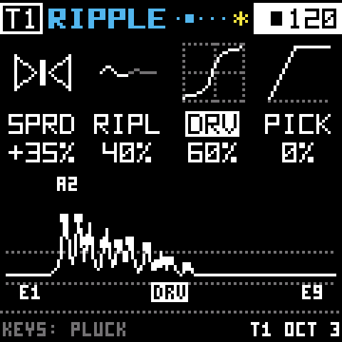
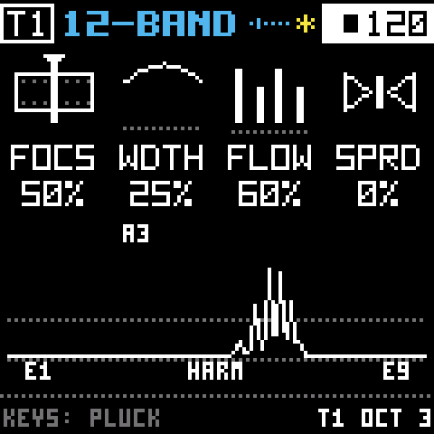
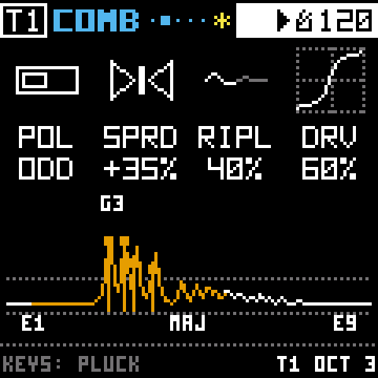
COLOR
Drive and bit crush on the first page, noise that rides the sound and a tilt EQ on the second, and what the crusher crushes on the third.
CHRONOS
A delay and two shared rooms. Press FX four times to reach it. The delay's pages come first, then the room's:
- CHRONOS 1: TIME, FDBK, and the two sends, DLY and VERB.
- CHRONOS 2, how the echoes sit: SYNC (on the tempo, 1/64 to 1/2), TONE, SPRD across the stereo field, and DUCK, which dips the echoes while the track plays.
- CHRONOS 3, what the repeats become: AGE (darker, more saturated, with a tape wow and flutter) and DIFF (smeared into a wash).
- CHRONOS 4, the room: ROOM (A or B), TYPE (ROOM, PLAT, HALL or SPRG), SIZE and DEC.
- CHRONOS 5, the room's finer points: PRE (a gap before it starts), RTON (its tone), MOD (a slow waver in the tail) and QUAL (HI, or LO for half the CPU and a darker tail).
Tracks 1 and 2 start on room A, 3 and 4 on room B. A room's knobs belong to the room, so turning them on one track changes it for every track on it.
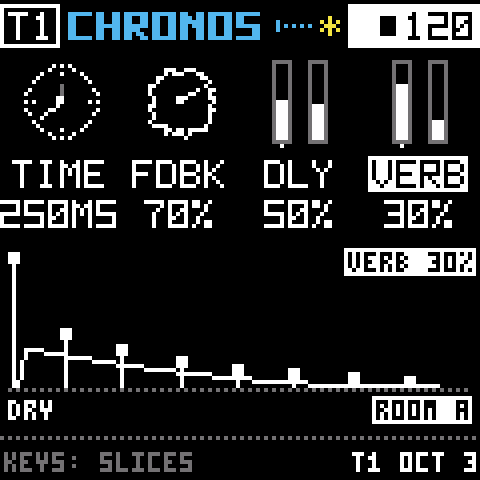
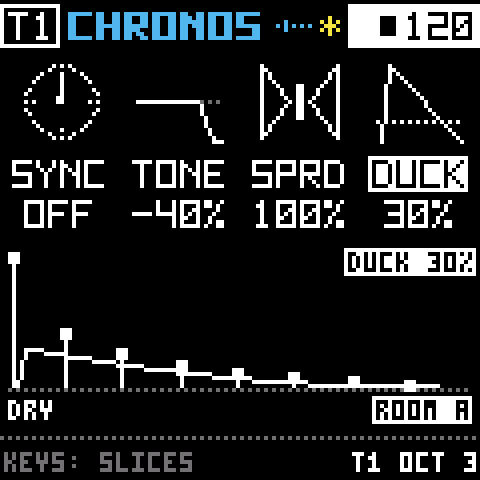
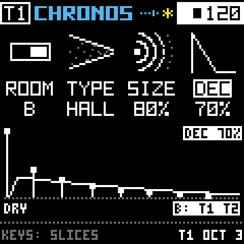
10Arpeggiators
The arpeggiator plays the keys you hold one at a time, in time with the tempo. Every track has one, and it adapts to the source:
- SYNTH and POLY: it plays notes. With SYNTH's CHRD on, every step is a whole chord.
- TAPE: it steps through the slices you hold.
- DRUM: it walks through the drums you hold. Hold kick, snare and hat with UPDN and you get kick, snare, hat, snare, kick.
Try it
- Press ARP.
- Turn KNOB 1 (MODE) to KEY.
- Hold a chord on the white keys. You'll hear its notes one after another, a sixteenth note each. On the screen, the bars are the pattern and the filled one is playing. On the keys, each note's key is lit, and the one sounding goes dark for its step.
| Knob | What it does |
|---|---|
| MODE | OFF. KEY plays while you hold keys. LTCH keeps the last chord playing after you let go; press a new chord to replace it. ADD keeps every key you press, so the pattern grows one note at a time. |
| ORDR | UP, DOWN, UPDN (up and back down), RND (random) or PLAY (the order you pressed them) |
| RNGE | 1, 2 or 3 octaves. On TAPE and DRUM it stays at 1, since a slice or a drum has no octave. |
| RATE | How long each step lasts: 1/4, 1/8, 8T, 1/16, 16T or 1/32 (T means triplet) |
| GATE (page 2) | How much of each step the note sounds, from short and plucky to long |
| SWNG (page 2) | Pushes every other step a little late |
| GRND (page 2) | Each note's length at random, up to this far either side of GATE, so the pattern breathes |
| FADE (page 2) | Let go of every key and the notes keep stepping while they fade out over this long. At 0, KEY stops at once and LTCH and ADD hold for good. |
Grow a pattern, and take notes out
Set MODE to ADD and press keys one at a time. Each one joins the pattern and stays. To take one note out, press its lit key again; the rest keep going. To clear everything, hold the black POLY key on the ARP page.
Let it fade
Turn FADE up on page 2 and let go: the notes keep stepping while their level falls away. Press any key during the fade and it comes back at full. In ADD the pile stays, quiet, until you press a key. On TAPE and DRUM, FADE is how long the slices or drums keep stepping after you let go.


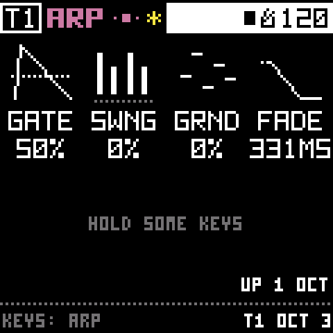
RIPL ARP: an arpeggio for RIPPLE
Press ARP a third time, or hold ARP and press white key 3. This is RIPPLE's own arpeggiator, separate from the track's. Each step plays RIPPLE at a new note, whatever the track itself is playing.
- MODE turns it on (OFF, KEY, LTCH, ADD). ORDR, RNGE and RATE work the same as above.
- With RIPPLE's KEYS on PLCK, each step plucks the strings. On TUNE, each step retunes RIPPLE, so the track's own sound rings in the pattern.
- Turn RIPPLE's WET up to hear it (EDIT seven times, then KNOB 4).
- A latched or piled-up pattern keeps going after you leave the page. Hold POLY here to clear it.

How they follow the transport
Keys you hold play right away, whether the transport is running or not. A latched or piled-up pattern keeps going when you switch to another track. STOP quiets it and keeps the notes, and PLAY starts it again from the top. Each track has its own, and saving a project keeps the notes it holds. Scenes leave arpeggios alone.
Manual 5.8 >11Mixer and scenes
Hold GLO for the mixer: white keys 1 to 4 pick a track, KNOB 1 to 4 set the four levels, and SELECT sets how many tracks are on (fewer tracks leave more memory for the rest). Tap GLO and the mixer stays up. Then each tap of EDIT moves through its pages:
| Page | What it does |
|---|---|
| SCENES | Four sounds to recall or morph between (below) |
| CHANNEL | The selected track's LOW, HIGH, FILT and PAN |
| MASTER | The master compressor: AMT, ATK, REL, MIX |
| KEY | The project's key and scale. 15 scales: the seven modes, harmonic and melodic minor, both pentatonics, blues, whole tone, diminished and chromatic. |
| SETUP | How the panel behaves (KEYS, KNOB, HOLD, LEDS), and where the CPU goes, stage by stage |
Scenes
A scene is a snapshot of how the whole project sounds: every track's source, every knob that shapes its sound (the source, GRAIN, RIPPLE, COLOR, CHRONOS and the channel strip), the levels and the rooms. It leaves what's playing alone. Tapes, patterns, steps, modulation, mutes, arpeggios, the tempo and the key all stay as they are when you change scenes.
Tap GLO, then EDIT, to reach SCENES. A scene moves every track at once, so the box at the top shows the project instead of a track. The white keys 1 to 4 are the scenes (they don't play notes here), and each knob sits under its scene.
- Store: hold a scene's white key and tap SAVE.
- Recall: tap a scene's white key. Everything glides there in about a third of a second.
- Morph: turn a scene's knob. Each click moves 5 % of the way toward that scene, and you can stop anywhere. Turn another scene's knob to head toward that one instead.
If a track has the same source in both scenes, its knobs glide. Settings that can't be halfway, like RIPPLE's form or a room's TYPE, switch at the midpoint. If the source changes, the track fades out, switches while it's silent, and fades back in.
The SCENES page draws a box for each scene: filled for the current one, framed for a stored one, dotted for an empty one. Under each, the letters T S P D show its tracks' sources, bright where a track would change source. Scenes are saved with the project, and the PROJECTS view shows how many each project holds before you load it. With the mixer up, you can also hold EDIT for a quick recall: SCENES shows while you hold it.


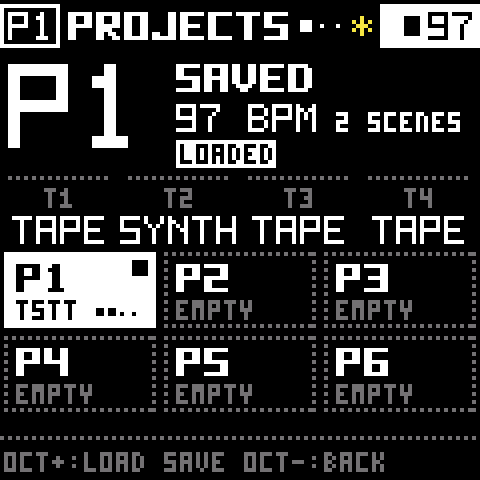
12Recording
REC records onto the track you're on. On a TAPE track it records the other three playing. That's how you bounce a scene down and keep building on it. ALGORITHM changes what each track's REC listens to: AUTO, the others, one track, or itself.
- Pick track 2 (hold GLO and press white key 2).
- Hold the black POLY key for half a second to clear its tape. The screen warns you first, and if you let go early nothing happens.
- Press PLAY, then REC. The header shows ● and the tape grows as it records.
- Press REC again after 10 to 15 seconds. Track 2 now loops what the others played.
For drum loops, hold REC and turn SELECT to record an exact number of bars. Cleared something by mistake? Hold SAVE to bring it back. The four tracks share about 20 seconds, so a long take leaves less for the others.
Bounce: a loop straight to tape
Got a SYNTH line, a POLY phrase, a DRUM pattern or a cloud of grains you want to keep as a loop? Hold REC and press PLAY. The track records itself from the next downbeat, for the bars you set with REC and SELECT (two if that's on FREE), and the transport starts if it was stopped. Keep playing through the bars. When the take is in, the track switches to TAPE by itself and loops it, in time, slices and all. The screen says something like "BOUNCED, 4.0 SEC ON TAPE".
On a TAPE track, a bounce records the track through its own effects, so you can print GRAIN, RIPPLE, COLOR and CHRONOS onto the tape. A take that was already there is cleared first, and holding SAVE brings it back. Tap REC before the downbeat to call it off.
Manual 4 >13Saving and undo
- Nothing is kept until you tap SAVE. It saves everything (every knob, source, pattern, modulation, arpeggio, scene, the mixer and the tempo) into the current project, P1 to start with. A tape you recorded goes into a user reel named after it, like
P1T2. - Hold SAVE to undo the last clear, reset or load.
- Turn PRESETS to see the six project slots. OCT+ loads one, SAVE saves into it, holding POLY deletes it, and OCT− leaves. Pick an empty slot and press OCT+ to start a blank project. Past P6, FACTORY brings back the factory project with its three scenes, and TEST is the same project set to GLITCH, for comparing builds.
- Track presets (A to H, plus eight factory ones) keep one track's sound. Turn PRESETS, then press EDIT.
Saving while it plays doesn't stop the sound. If there's a new recording to write, the sound fades out for a moment and back in. Bryo prepares the next save during a quiet moment, so a save in the middle of a set stays short.
Manual 9 >14With a computer
Files
Plug the FM-1 into a computer and it shows up as a small drive called BRYO.
TAPE1.WAVtoTAPE4.WAVare what each track plays. Copy them off to keep them.- Copy a WAV on and name it
TAPE2.WAVto replace track 2's tape. - A WAV with any other name becomes one of six user reels (up to 21.5 s). Any reel can also become a wavetable for SYNTH's WT.
- Eject and plug back in to see new files. Deleting a file on the computer doesn't delete the sound; you do that on the REELS page.
Record what the computer plays
With the transport stopped, hold REC for a second. Set Bryo as the computer's sound output, then press REC to start a take and REC again to stop it. A take can be as long as the free memory. Trim it with STRT and LEN, set GAIN and FADE, pick a track with white keys 1 to 4, and press REC to keep it. HOME takes you back a step.
Manual 10 >15When something goes wrong
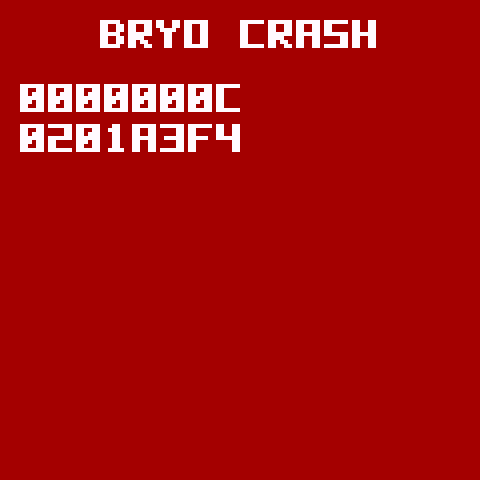
- A red BRYO CRASH screen: it restarts on its own after 4 seconds. Anything you hadn't saved is gone, but saved projects, reels and settings are safe. If it freezes instead, it restarts after 8 seconds. If it crashes twice within 30 seconds of turning on, it starts in update mode so you can reinstall it.
- UPDATE MODE IN 3…: you're holding OCT− and OCT+ together. Five seconds puts it in update mode. Let go to cancel.
- A calibration screen: OCT− and OCT+ were held while it turned on. Follow the screen, or turn it off and on again.
- 12 DEPTHS ON M1 (or M2, M3, M4): that modulator already moves twelve knobs. Turn one back to 0, or hold its pad and MONO to clear its knobs on the page.
If you hit a crash, please write down what you were doing and open an issue. That's the quickest way for me to find the bug.
Manual 11 >16Quick reference
| Do this | To |
|---|---|
| PLAY | Start or stop |
| SELECT | Tempo |
| MASTER | Volume |
| GLO held + white key 1 to 4 | Pick a track |
| GLO held + KNOB 1 to 4 | Track levels |
| GLO held + SELECT | How many tracks are on |
| GLO tapped, then EDIT | SCENES, CHANNEL, MASTER, KEY, SETUP |
| SCENES: white key 1 to 4 | Recall a scene (held + SAVE stores it) |
| SCENES: KNOB 1 to 4 | Morph toward that scene |
| OP1 to OP4 | Mute tracks |
| OP5 / OP6 | Tape backwards / half speed |
| HOME | The source's own pages |
| HOME held + SELECT | Change the source |
| EDIT | GRAIN, then RIPPLE |
| EDIT held + SELECT | RIPPLE's form: RIPPLE, COMB, RESO, 12-BAND |
| FX | COLOR, then CHRONOS |
| ENV | What shapes the source: envelopes, filter, kit |
| LFO / SEQ tapped | That modulator's pages |
| LFO / SEQ held + a knob | How much that modulator moves the knob (up to 12 knobs each) |
| LFO held + OP1 / OP2 / OP3 | Which modulator LFO shows: M1, M2, M3 |
| LFO held + SELECT | What the modulator is: LFO, ADSR or FOLLOW |
| ARP | The arpeggiator; its third page is RIPL ARP |
| ARP page, black POLY held | Clear the arpeggio's notes |
| ARP on, a lit key | Take that note out of the pattern |
| GLO held + OCT+ | Black keys: shortcuts or notes |
| REC | Record onto the track |
| REC held + SELECT | Record an exact number of bars |
| REC held + PLAY | Bounce the track to a loop on its tape |
| REC held 1 s, stopped | Record the computer |
| ALGORITHM | What REC records |
| Black POLY held | Clear the tape (on DRUM, the pattern) |
| Black MONO held | Clear the track's modulation |
| Black 0 | Freeze GRAIN (hold it, or tap to latch) |
| SCL held + a knob | That knob back to its default |
| SCL held + the lit pad | The whole page back to its defaults |
| SAVE | Save the project |
| SAVE held | Undo the last clear, reset or load |
| PRESETS | Projects; EDIT for track presets, again for reels |
| OCT− / OCT+ | Octave (on DRUM, the bar) |
Every control, in every situation, is listed in controls.tsv, and a test checks that list against the code.
17Building and testing
You don't need the device toolchain to work on Bryo. The host tests build the whole sound chain, the controls and the screens with any C compiler, then check every screen against its pixel fingerprint. The pictures on this site come from those tests.
pip3 install Pillow fonttools
cd bryo
tests/run_tests.sh # should end with "ALL HOST TESTS PASSED"To see what each modulation target costs (needs numpy, and valgrind for --cost):
sh tests/mod_audit.sh --costOn the device, load the TEST project, press PLAY, and read SETUP's load lines to see what a new build changed. bryo-architecture.md explains how each part is built, and performance-plan.md covers the recent speed work. If you'd like to help, start with CONTRIBUTING.md.
18Credits and licence
Bryo is a fork of Felucca, the open firmware for the FM-1 by Leo Kuroshita (@kurogedelic) and Hügelton Instruments. They worked out how the FM-1 works and wrote the firmware Bryo still stands on: the hardware layer, the update loader, USB, storage, the display and the installer. Thank you, Leo.
Felucca credits DaisySP and Rings (Electrosmith, Emilie Gillet), msfa (Google, Pascal Gauthier, via Dexed), klattsch (Tony Gies), the Inter Tight font (The Inter Project Authors), the Fukiai icon font (Hügelton), the VSCO-2 CE and VCSL sample libraries (Versilian Studios) and three files from the JieLi AC79 SDK. Those credits carry through to Bryo.
Bryo is GPL-3.0-only, like Felucca. If you share it, or firmware built from it, share the complete source with it too. The details are in LICENSE, LICENSING.md and NOTICE.md.